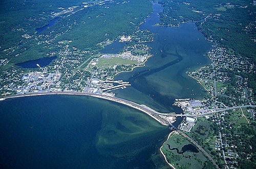

This is my website! I am a student at the University of Maine. I live in a town called Nianitc which is located in Southeastern Connecticut on the shoreline. I come from a very large family growing up with many cousins. Many of my cousins are into business so therefore I dont know what I am going to major in, still deciding wether Business Management or Finance, and I look very forward to my next four years in Orono.